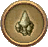
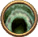
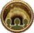
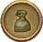
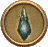

All
Locales
Dungeons
Primal Battles
Raids
Others
Seasonal
FFXIV Orchestrion Tracker
v0.1.2
Drop Tips
2.x raids and primals have guaranteed drops from chest if you do them with "min iLevel" setting checked.
Dungeon drops go directly to player inventory when you beat the last boss.
Thanks to /u/Shini-tan for
compiling the info
.
Thanks to ScarletBlues for 3.3 roll data updates.
This is a fork from
a project by echogame
You can find me on
Hyperion @ Chai Latte
Thanks to /u/LightSamus for
compiling data updating this list to 3.5